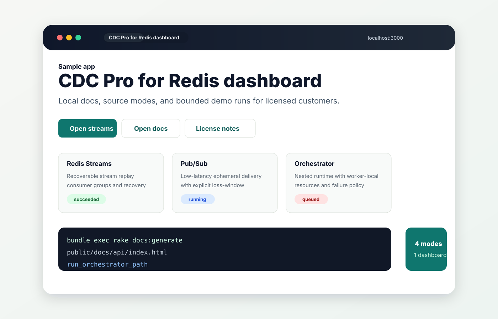
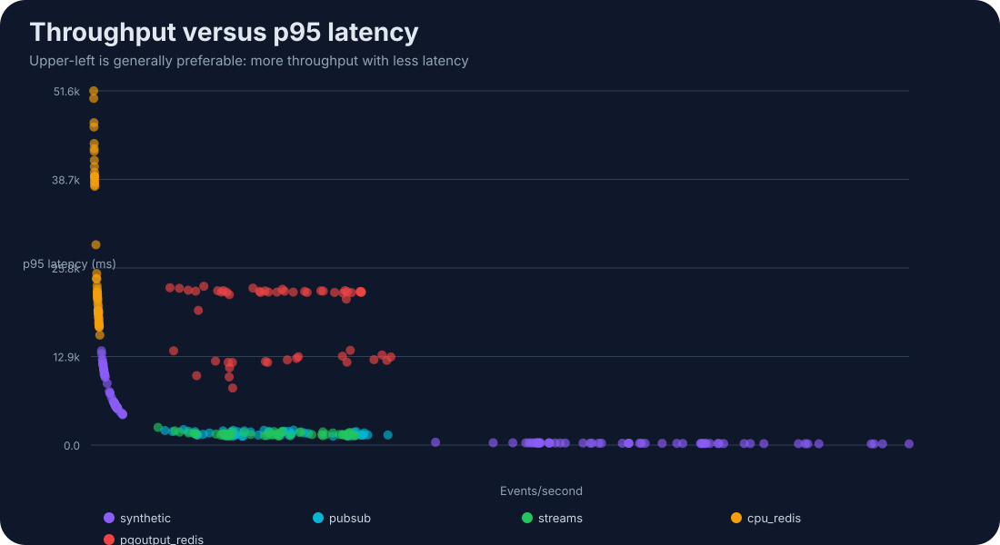

Redis Streams
Consumer groups, checkpointing, pending-entry recovery, duplicate suppression, dead-letter streams, and batch-aware source execution for recoverable workloads.
Commercial Redis CDC for Ruby
A paid Ruby CDC bundle for Redis-heavy systems: fast Redis source
drivers from cdc-redis-pro, paired with
cdc-orchestrator-pro for concurrent downstream
processing, worker-local resource pools, and benchmark-backed
runtime tuning.
The source code and package registry remain private. This public site exists for discovery, product evaluation, and customer onboarding.
Features
Use Redis as a high-speed CDC ingress path without pretending it has PostgreSQL replication semantics. Durable and ephemeral modes are surfaced honestly, with health, metrics, and topology checks.
Consumer groups, checkpointing, pending-entry recovery, duplicate suppression, dead-letter streams, and batch-aware source execution for recoverable workloads.
Low-latency ephemeral sources for events where speed matters more than replay. Loss windows are explicit instead of hidden.
Sentinel primary discovery, Redis Cluster routing, same-slot Streams, sharded Pub/Sub, and multi-primary keyspace subscription support.
Certified local topologies cover TLS, ACL authentication, standalone Redis, Sentinel, and Cluster configurations.
Run sources, check health, print Prometheus metrics, process JSONL events, or pipe Redis source events directly into the orchestrator runtime.
A standalone Ruby example shows worker-local Redis client
pooling upstream, Redis source mode configs, downstream
process_many, license env vars, and local API docs
generation.
Streams, Pub/Sub, Sharded Pub/Sub, and Keyspace recordings are published on asciinema.org.
A Rails front end for the same licensed bundle, with per-mode run buttons, run history, and a local docs page customers can open after installing the gems.
Example applications
The landing page should put the two working samples in front of people who want to inspect the bundle, not hide them behind the benchmarks.

Worker-local upstream pooling, source mode walkthroughs, and downstream orchestration in a plain Ruby app.
A browser-based demo surface for the same licensed bundle, with local docs, mode pages, and bounded run controls.
Downstream runtime
The bundle showcases Redis as a fast upstream source coupled to
cdc-orchestrator-pro for downstream processing:
outer Ractor workers, inner fiber concurrency, partitioning,
failure policy, and worker-local resource ownership.
cdc-redis-pro run --config redis.yml --metrics prometheus
cdc-redis-pro health --config redis.yml
cdc-redis-pro metrics --config redis.yml
cdc-redis-pro orchestrate --batch-size 25 --redis-url redis://...
cdc-redis-pro pipe --config redis.yml --ractors 3 --fibers 50Performance evidence
The published reports expose CSV-backed benchmark artifacts and a generated analytics dashboard for Redis source and downstream orchestration workloads.

Commercial license
CDC Pro for Redis is sold manually for the founding release. A paid license includes private GitHub Packages access, signed offline license tokens, local API documentation, and support for integration questions.
| GitHub username | Used for private package access. |
|---|---|
| Use case | Redis topology, expected event volume, and downstream sink. |
| License term | Founding license duration and renewal date are agreed manually. |
| Support channel | Email, GitHub issue access, or another agreed customer channel. |
Customer setup
Customers install from GitHub Packages with a token that can read private packages. Runtime license checks are offline: the app receives a signed token and a public verification key.
bundle config https://rubygems.pkg.github.com/kanutocd USERNAME:TOKEN
source "https://rubygems.pkg.github.com/kanutocd" do
gem "cdc-redis-pro", "0.9.0"
gem "cdc-orchestrator-pro", "0.9.0"
end
export CDC_REDIS_PRO_LICENSE_KEY="cdc-license-v1..."
export CDC_REDIS_PRO_LICENSE_PUBLIC_KEY="-----BEGIN PUBLIC KEY-----..."
export CDC_ORCHESTRATOR_PRO_LICENSE_KEY="$CDC_REDIS_PRO_LICENSE_KEY"
export CDC_ORCHESTRATOR_PRO_LICENSE_PUBLIC_KEY="$CDC_REDIS_PRO_LICENSE_PUBLIC_KEY"Customer resources
The product value is private package access, commercial usage rights, updates, and direct support. License checks are a local entitlement guard, not a substitute for the commercial agreement.
Access to cdc-redis-pro and
cdc-orchestrator-pro through GitHub Packages.
A signed token that can be verified locally without outbound license-server access.
Local YARD API docs generated from the exact installed gem versions, plus this public discovery site.
Public CSV and dashboard evidence for throughput, latency, soak stability, and recovery behavior.
Integration help for Redis topology, runtime sizing, CLI use, and production rollout questions.
Access to commercial fixes and customer-visible package releases during the license term.